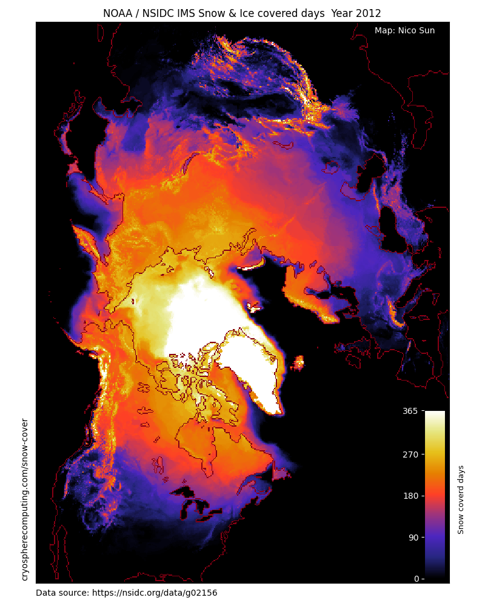
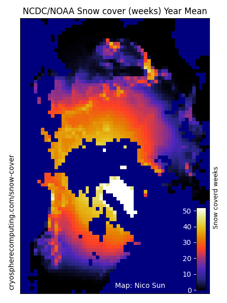
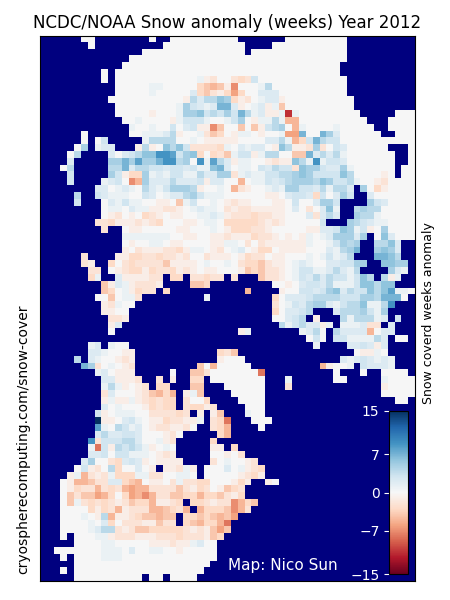
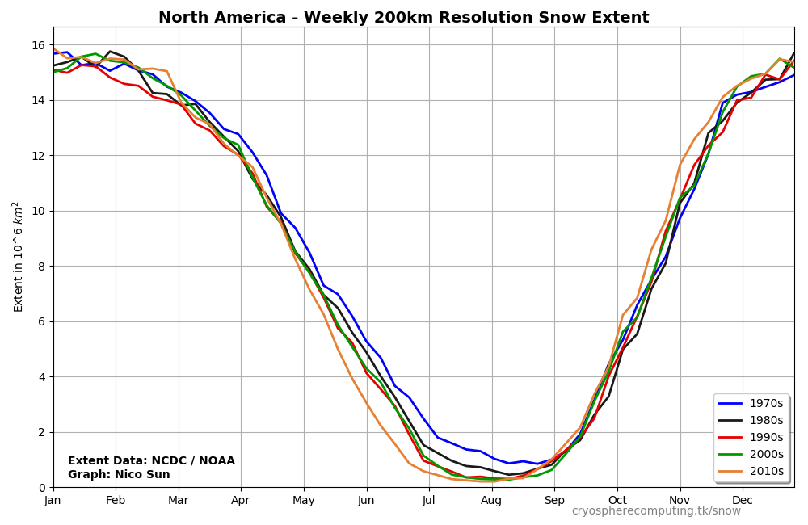

Snow Cover
Total number of days a gridcell is snow or ice covered.



High resolution (24km) snow cover data is only available since February 1997. Long-term data since October 1966 is at a significantly lower quality.
The resolution is only 200km, data is weekly instead of daily, some dates in 1969 and 1971 are completely missing or the data is obviously false (mostly ice-free Greenland).
However, having a longer record gives a better view of changes over time and a few missing days do not impact the decadal mean much.
The baseline for anomaly calculation is 2000-2019




Data used
National Ice Center. 2008, updated daily. IMS Daily Northern Hemisphere Snow and Ice Analysis at 1 km, 4 km, and 24 km Resolutions, Version 1.1-1.3. Boulder, Colorado USA. NSIDC: National Snow and Ice Data Center. doi: https://doi.org/10.7265/N52R3PMC.